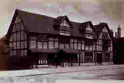

Stratford-on-Avon
Stratford-on-Avon in southern Warwickshire, England, lies on the River Avon, about 90 mi. northwest of London. The population is around 20,100. The borough's industries include brewing, canning, and metalworking. Amazingly, a weekly market has been held since 1196. The tour, of course visits the village as it is the birthplace of William Shakespeare. Stratford-on-Avon derives most of its income from tourism. We will see Shakespeare's birthplace, the site of his retirement home, his tomb, and the houses once occupied by his daughter and his wife, Ann Hathaway. Other notable landmarks are a 15th-century bridge, the Royal Shakespeare Theater (rebuilt 1932), and several museums.
